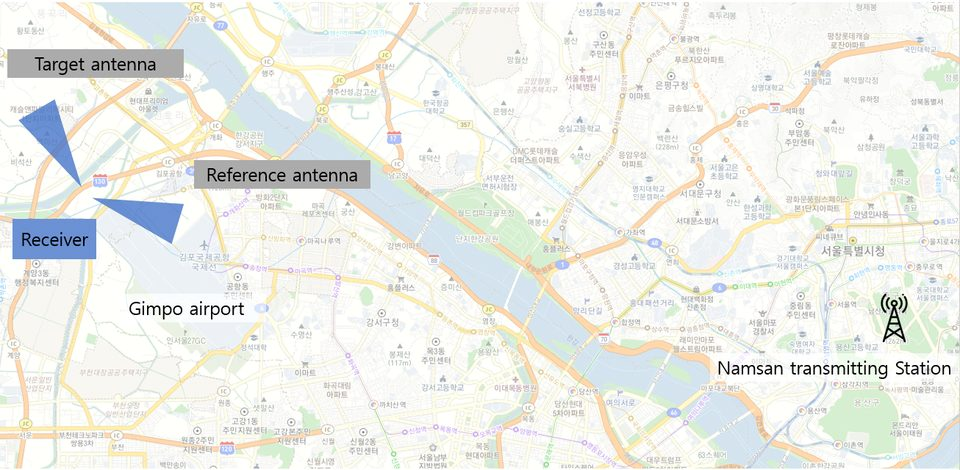

연구실적 · 국내전문학술지
DTV 방송 신호를 사용한 드론 탐지 수동형 레이다의 구현
Drone Detection Using DTV-Based Passive Radar System

초록
Despite growing threats from hostile drones, conventional active radar remains unsuitable for urban surveillance. The DVB-T broadcast signal offers wide bandwidth and high transmit power compared with FM or WiFi signals, enabling a simple, low-cost passive radar with wide coverage. This paper implements a DVB-T passive radar system with high-gain Yagi antennas, LNAs and low-cost RF receivers, analyzes domestic broadcast signals, and experimentally assesses detection of airplanes and small drones.
사이트 원문 표기
천형일, 이새미, 이상민, 문민정, 이우경, “DTV 방송 신호를 사용한 드론 탐지 수동형 레이다의 구현”, 한국전자파학회지, 제 32권 3호, 2021년 3월
BibTeX
@article{Chun_2021,
title={Drone Detection Using DTV-Based Passive Radar System},
volume={32},
ISSN={2288-226X},
url={http://dx.doi.org/10.5515/KJKIEES.2021.32.3.277},
DOI={10.5515/kjkiees.2021.32.3.277},
number={3},
journal={The Journal of Korean Institute of Electromagnetic Engineering and Science},
publisher={Korean Institute of Electromagnetic Engineering and Science},
author={Chun, Hyung-Il and Lee, Sae-Mi and 이, 상민 and Moon, Min-Jeong and Lee, Woo-Kyung and Lee, Hoon},
year={2021},
month=Mar,
pages={277–288}
}